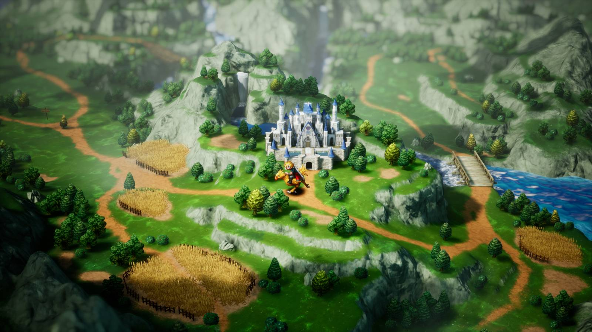

Gaming · 24 Oct 2026
3 Final Fantasy Games to Play if You Loved FF Resonance

Final Fantasy Resonance left you wanting more? Consider these three games a mini Final Fantasy series retrospective
Multiple independent publishers are reporting on the same development: 3 Final Fantasy Games to Play if You Loved FF Resonance.
The available reports place the development in the Gaming category. The accounts were compared for agreement on the central event rather than simply shared names or broad topics.
One of the available reports describes the development this way: Final Fantasy Resonance left you wanting more? Consider these three games a mini Final Fantasy series retrospective
Readers should consult the linked source reports for additional context, updates and details that may change as the story develops.
Sources
This article was produced by the C. O. Eric AI Newsroom from the cited sources. It is published only after automated evidence and safety checks.